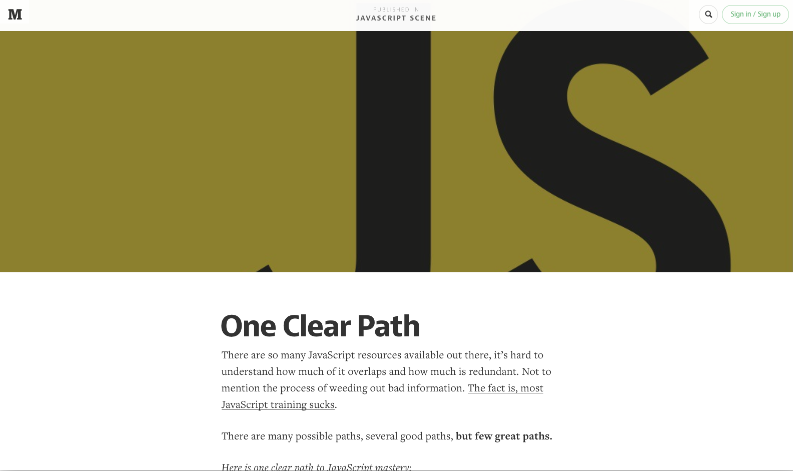
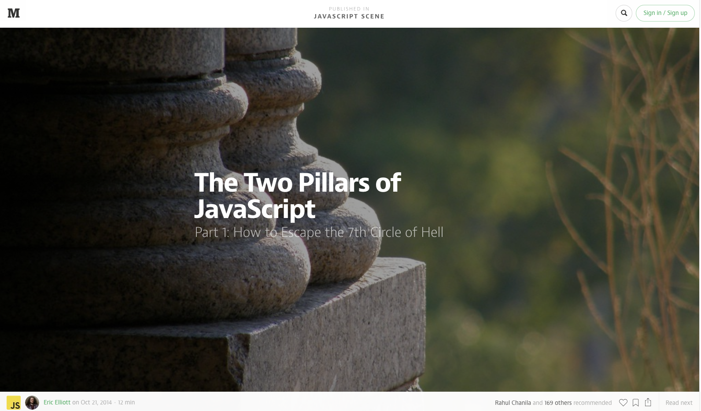
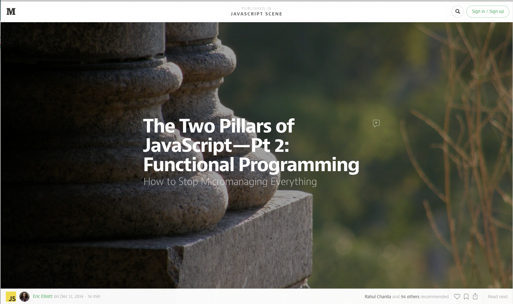
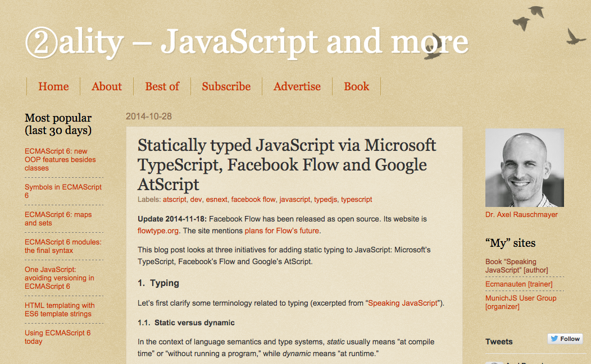
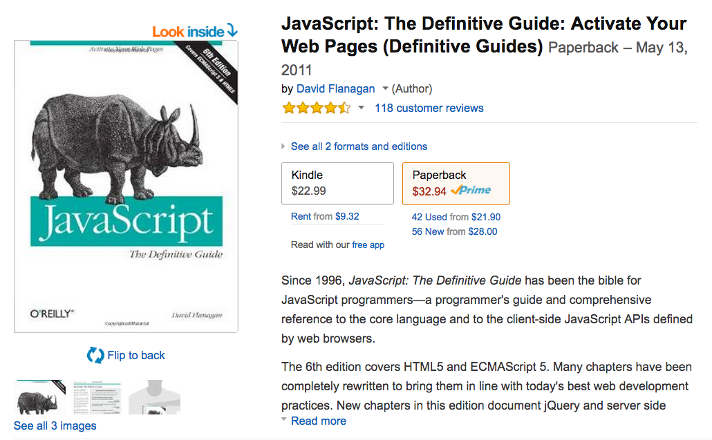
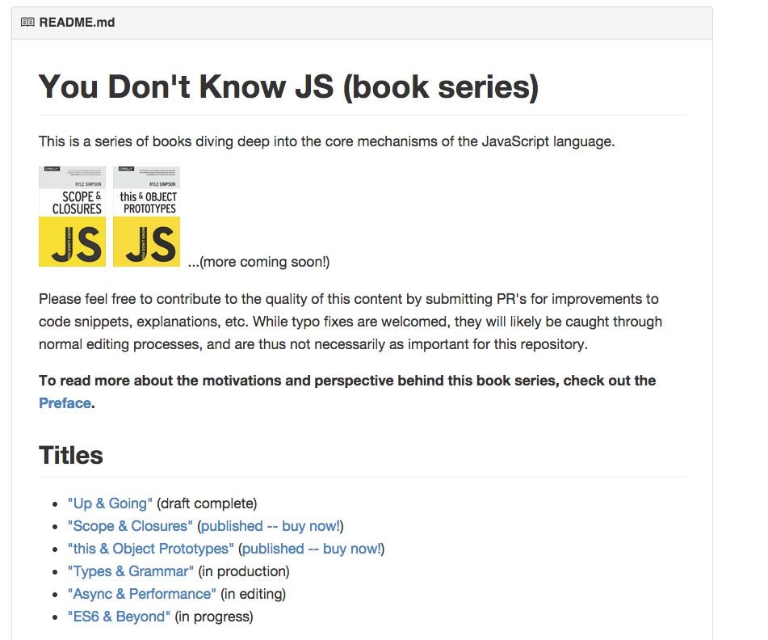
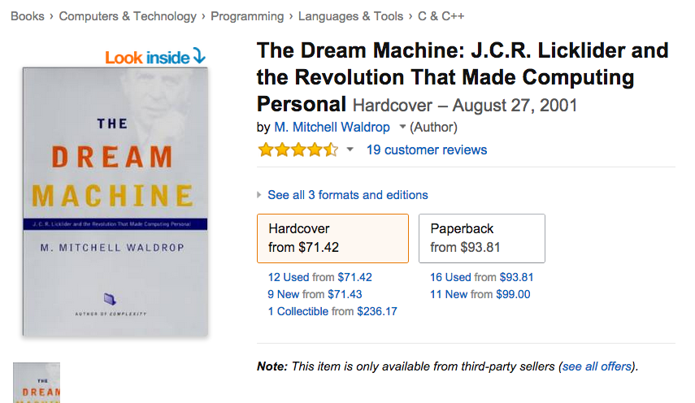
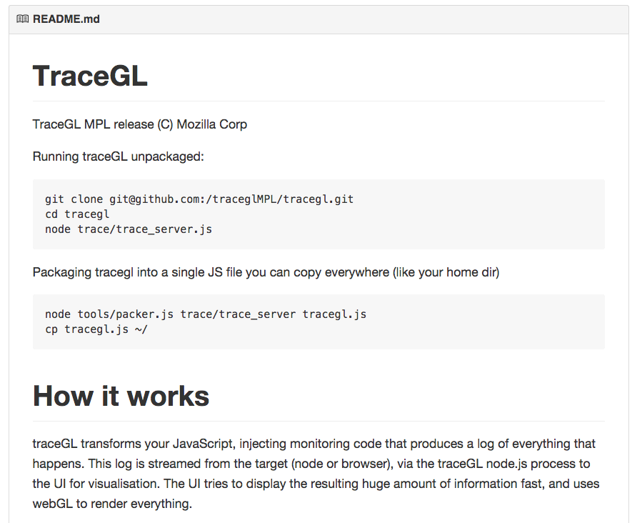
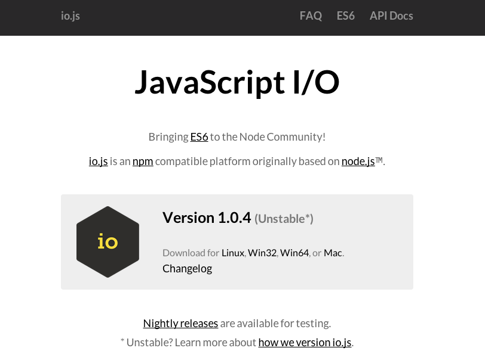
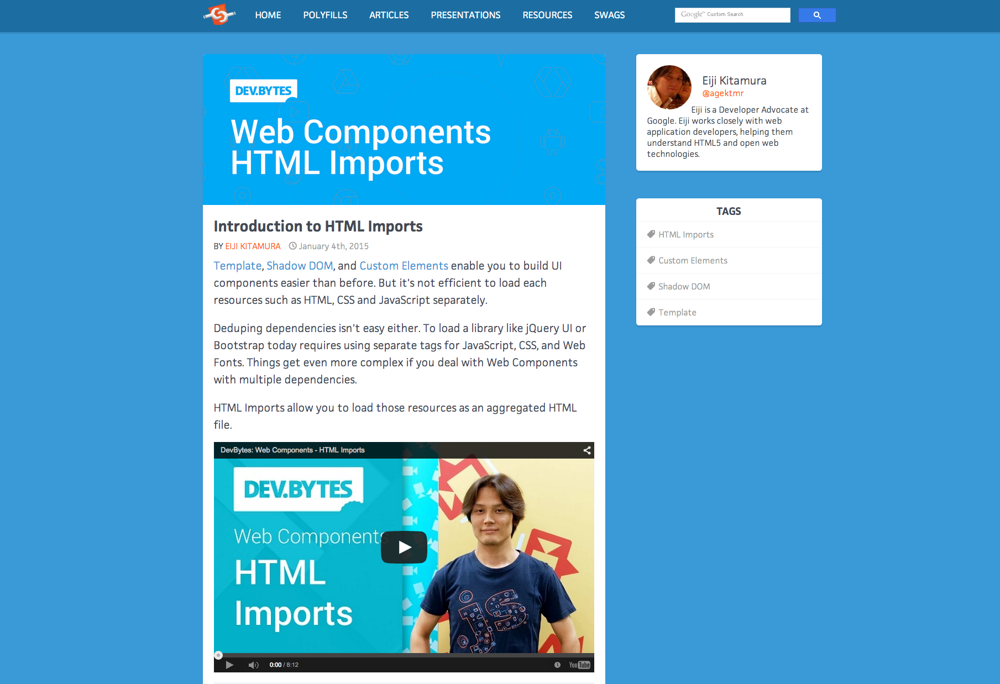

Essential JavaScript Links
A curated list by Eric Elliott and friends. Suggest links in the comments below. [Source]
This is a very exclusive collection of only must-have JavaScript links. I'm only listing my favorite links. Nothing else makes the cut. Feel free to suggest links if you think they're good enough to make this list. The really curious should feel free to browse the comments to find other links. I can't guarantee the quality of links in the comments.
Full Disclosure
Some of these links are affiliate links, meaning that if you make a purchase, I might earn a little money. This has absolutely no bearing on whether or not links make the list. None, whatsoever. However, it does allow me more resources to fight poverty with code. Every little bit counts.
Required Reading (Online resources)

One clear path to JavaScript mastery.
By Eric Elliot. Published at medium.com on August 2, 2014
By Eric Elliot. Published at medium.com on August 2, 2014
99 out of 100 JS developers lack the skills they need to fill hundreds of thousands of jobs. We can change that.
By Eric Elliot. Published at medium.com on December 29, 2014
By Eric Elliot. Published at medium.com on December 29, 2014

“You never need classes in JavaScript, and I have never seen a situation where class is a better approach than the alternatives.”
By Eric Elliot. Published at medium.com on October 21, 2014
By Eric Elliot. Published at medium.com on October 21, 2014

“Closures are a mechanism for containing state. In JavaScript, a closure is created whenever a function accesses a variable defined outside the immediate function scope. It’s easy to create closures: Simply define a function inside another function, and expose the inner function, either by returning it, or passing it into another function. The variables used by the inner function will be available to it, even after the outer function has finished running.”
By Eric Elliot. Published at medium.com on December 12, 2014
By Eric Elliot. Published at medium.com on December 12, 2014

An excellent explanation of inheritance in JavaScript. “JavaScript has been plagued since the beginning with misunderstanding and awkwardness around its ‘prototypal inheritance’ system, mostly due to the fact that ‘inheritance’ isn't how JS works at all, and trying to do that only leads to gotchas and confusions that we have to pave over with user-land helper libs. Instead, embracing that JS has ‘behavior delegation’ (merely delegation links between objects) fits naturally with how JS syntax works, which creates more sensible code without the need of helpers.”
By Kyle Simpson. Published at davidwalsh.com on April 22, 2013
By Kyle Simpson. Published at davidwalsh.com on April 22, 2013
“Isomorphic JavaScript apps are JavaScript applications that can run both client-side and server-side.
The backend and frontend share the same code.”
“On an architectural level, the way we craft large-scale applications in JavaScript has changed in at least one fundamental way in the last few years. Once you remove the minutia of machinery bringing forth unidirectional data-binding, immutable data-structures and virtual-DOM (all of which are interesting problem spaces) the one key concept that many devs seem to have organically converged on is composition. Composition is incredibly powerful, allowing us to stitch together reusable pieces of functionality to ‘compose’ a larger application....
”Note: earlier players in the JS framework game (Dojo, YUI, ExtJS) touted composition strongly and it’s been around forever but it’s taken us a while for most people to grok the true power of this model as broadly on the front-end.”
By Addy Osmani. Published at medium.com on December 15, 2014
”Note: earlier players in the JS framework game (Dojo, YUI, ExtJS) touted composition strongly and it’s been around forever but it’s taken us a while for most people to grok the true power of this model as broadly on the front-end.”
By Addy Osmani. Published at medium.com on December 15, 2014
Great read, even if you're not a React user. “The new great idea in React is Virtual DOM Rendering. The gist is to frequently re-render a complete and lightweight representation of the DOM, then apply a difference filter to detect the minimum changes that need to be made to the DOM. A similar technique has existed in game development long before React: re-render the game screen in every game loop, but only update the minimum portion of the screen which changed compared to the previously rendered screen.”
By Andre Medeiros. Published at Futurice on November 2, 2014
By Andre Medeiros. Published at Futurice on November 2, 2014
“Reactive programming is programming with asynchronous data streams.
“In a way, this isn't anything new. Event buses or your typical click events are really an asynchronous event stream, on which you can observe and do some side effects. Reactive is that idea on steroids. You are able to create data streams of anything, not just from click and hover events. Streams are cheap and ubiquitous, anything can be a stream: variables, user inputs, properties, caches, data structures, etc. For example, imagine your Twitter feed would be a data stream in the same fashion that click events are. You can listen to that stream and react accordingly.”
By André Staltz
“In a way, this isn't anything new. Event buses or your typical click events are really an asynchronous event stream, on which you can observe and do some side effects. Reactive is that idea on steroids. You are able to create data streams of anything, not just from click and hover events. Streams are cheap and ubiquitous, anything can be a stream: variables, user inputs, properties, caches, data structures, etc. For example, imagine your Twitter feed would be a data stream in the same fashion that click events are. You can listen to that stream and react accordingly.”
By André Staltz
What is all this talk about reactive? Functional? Promises? This is the beginning of a reactive programming bible. “In the context of a computer program, reactivity is the process of receiving external stimuli and propagating events. This is a rather broad definition that covers a wide variety of topics. The term is usually reserved for systems that respond in turns to sensors, schedules, and above all, problems that exist between the chair and keyboard....
“[V]arious minds in the field of reactivity have been converging on a model that unifies at least promises and observables.”
By Kris Kowal. First posted at github on August 9, 2014. 5 contributors
“[V]arious minds in the field of reactivity have been converging on a model that unifies at least promises and observables.”
By Kris Kowal. First posted at github on August 9, 2014. 5 contributors
A series of blog postson ES6 generators: “Whether you realized it or not, you've always been able to assume something fairly fundamental about your functions: once the function starts running, it will always run to completion before any other JS code can run....
“With ES6 generators, we have a different kind of function, which may be paused in the middle, one or many times, and resumed later, allowing other code to run during these paused periods.”
By Kyle Simpson. Published at davidwalsh.com, July – August 2014
“With ES6 generators, we have a different kind of function, which may be paused in the middle, one or many times, and resumed later, allowing other code to run during these paused periods.”
By Kyle Simpson. Published at davidwalsh.com, July – August 2014

Excellent post about the state of typed JavaScript via Microsoft’s TypeScript, Facebook’s Flow and Google’s AtScript.
By Axel Rauschmayer. Published at 2ality and updated on November 18, 2014
By Axel Rauschmayer. Published at 2ality and updated on November 18, 2014
“Every piece of software deals with complex control flow mechanisms like callbacks, promises, events, and streams. Some require simple asynchronous coordination, others processing of event or stream-based data, and many deal with both. Your solution to this has a deep impact on your code.
“It’s not surprising that a multitude of solutions exist. Callbacks are a dumb simple way for passing single values around asynchronously, and promises are a more refined solution to the same problem. Event emitters and streams allow asynchronous handling of multiple values. FRP is a different approach which tackles streams and events more elegantly, but isn’t as good at asynchronous coordination. It can be overwhelming just to know where to start in all of this.”
By James Long. Posted on September 08, 2014
“It’s not surprising that a multitude of solutions exist. Callbacks are a dumb simple way for passing single values around asynchronously, and promises are a more refined solution to the same problem. Event emitters and streams allow asynchronous handling of multiple values. FRP is a different approach which tackles streams and events more elegantly, but isn’t as good at asynchronous coordination. It can be overwhelming just to know where to start in all of this.”
By James Long. Posted on September 08, 2014
“JavaScript does not have built-in support for modules, but the community has created impressive work-arounds. The two most important (and unfortunately incompatible) standards are CommonJS Modules ... [and] Asynchronous Module Definition (AMD)....
“The goal for ECMAScript 6 modules was to create a format that both users of CommonJS and of AMD are happy with.”
By Axel Rauschmayer. Published at 2ality.com on September 7, 2014
“The goal for ECMAScript 6 modules was to create a format that both users of CommonJS and of AMD are happy with.”
By Axel Rauschmayer. Published at 2ality.com on September 7, 2014
Required Viewing
“What does a mouse drag event have in common with an array of numbers? The answer to this question may surprise you: they are both collections. This insight holds the key to dramatically simplifying asynchronous programming in JavaScript. In this talk you will learn how you can use the familiar JavaScript Array methods to create surprisingly expressive asynchronous programs.”
Talk by Jafar Husain. Delivered at @Scale 2014. Published on September 22, 2014
Talk by Jafar Husain. Delivered at @Scale 2014. Published on September 22, 2014

“We live in a time of vast computational resources — many of us carry around in our pockets what just thirty years ago would have been considered a supercomputer. But it’s not just the hardware, these bite-sized supercomputers run software using state-of-the-art dynamic compilation techniques to deliver stellar performance without sacrificing flexibility.
“While all of this may sound incredibly futuristic, many of us still program these Dream Machines with miserly techniques not far removed from the best practices of the 1960s.
Talk by David Nolen. Delivered at JSConf. Published on Jul 1, 2014
“While all of this may sound incredibly futuristic, many of us still program these Dream Machines with miserly techniques not far removed from the best practices of the 1960s.
Talk by David Nolen. Delivered at JSConf. Published on Jul 1, 2014
Delivering the goods — Paul Irish
One of the most important but overlooked topics in the development world today — page load times.
Keynote by Paul Irish. Delivered at Fluent 2014. Published on March 13, 2014
Keynote by Paul Irish. Delivered at Fluent 2014. Published on March 13, 2014
Spec
An annotated, hyperlinked version of the ECMAScript 5.1 spec.
Most-recent draft of the ECMAScript 6 specfication.
Version: Rev 30, December 24, 2014
Version: Rev 30, December 24, 2014
Books
Subtitled A Playful Introduction to Programming. “A lighthearted introduction that teaches programming essentials through patient, step-by-step examples paired with funny illustrations.... Along the way, you’ll write games such as Find the Buried Treasure, Hangman, and Snake.... With visual examples like bouncing balls, animated bees, and racing cars, you can really see what you’re programming. Ages 10+”
By Nick Morgan. Published by No Starch Press in December 2014. ISBN: 978-1-59327-408-5. 336 pages
By Nick Morgan. Published by No Starch Press in December 2014. ISBN: 978-1-59327-408-5. 336 pages
Subtitled 68 Specific Ways to Harness the Power of JavaScript. Uses a “scenario-driven style ... to explain the important concepts in JavaScript.”
By David Herman. Published by Pearson on December 6, 2012. ISBN-13: 978-0321812186. 200 pages
By David Herman. Published by Pearson on December 6, 2012. ISBN-13: 978-0321812186. 200 pages
Free online edition.
“To some of us, writing computer programs is a fascinating game. A program is a building of thought. It is costless to build, it is weightless, and it grows easily under our typing hands.
“But without care, a program’s size and complexity will grow out of control, confusing even the person who created it. Keeping programs under control is the main problem of programming. When a program works, it is beautiful. The art of programming is the skill of controlling complexity. The great program is subdued, made simple in its complexity.”
By Marijn Haverbeke. Published by No Starch Press in December 2014. ISBN: 978-1-59327-584-6. 472 pages
“To some of us, writing computer programs is a fascinating game. A program is a building of thought. It is costless to build, it is weightless, and it grows easily under our typing hands.
“But without care, a program’s size and complexity will grow out of control, confusing even the person who created it. Keeping programs under control is the main problem of programming. When a program works, it is beautiful. The art of programming is the skill of controlling complexity. The great program is subdued, made simple in its complexity.”
By Marijn Haverbeke. Published by No Starch Press in December 2014. ISBN: 978-1-59327-584-6. 472 pages
“Crockford identifies the abundance of good ideas that make JavaScript an outstanding object-oriented programming language-ideas such as functions, loose typing, dynamic objects, and an expressive object literal notation. Unfortunately, these good ideas are mixed in with bad and downright awful ideas, like a programming model based on global variables.”
By Douglas Crockford. Published in May, 2008. ISBN13: 978-0596517748. 172 pages
By Douglas Crockford. Published in May, 2008. ISBN13: 978-0596517748. 172 pages
Free online edition.
“In the real world, JavaScript applications are fragile, and when you change them things often break. Author Eric Elliott shows you how to add features without creating bugs or negatively impacting the rest of your code during the course of building a large JavaScript application.”
By Eric Elliott. Published by O’Reilly on June 22, 2014. ISBN13: 9781449320942. 300 pages
“In the real world, JavaScript applications are fragile, and when you change them things often break. Author Eric Elliott shows you how to add features without creating bugs or negatively impacting the rest of your code during the course of building a large JavaScript application.”
By Eric Elliott. Published by O’Reilly on June 22, 2014. ISBN13: 9781449320942. 300 pages

“A programmer’s guide and comprehensive reference to the core language and to the client-side JavaScript APIs defined by web browsers.... Covers HTML5 and ECMAScript 5.”
By David Flanagan. Sixth edition published by O’Reilly on May 13, 2011. ISBN: 9780596805531. 1096 pages
By David Flanagan. Sixth edition published by O’Reilly on May 13, 2011. ISBN: 9780596805531. 1096 pages

Prerelease (unedited) versions available at Github.
“Books in the You Don’t Know JS series dive into trickier parts of the language that many JavaScript programmers simply avoid. Armed with this knowledge, you can achieve true JavaScript mastery.”
By Kyle Simpson. Published By O'Reilly. ‘Scope & Closures,’ published in March 2014, print ISBN: 978-1-4493-3558-8, 98 pages. ‘this & Object Prototypes,’ July 2014, print ISBN:978-1-4919-0415-2, 174 pages. ‘Types & Grammar,’ to be published in February 2015, print ISBN:978-1-4919-0419-0, 198 pages.
“Books in the You Don’t Know JS series dive into trickier parts of the language that many JavaScript programmers simply avoid. Armed with this knowledge, you can achieve true JavaScript mastery.”
By Kyle Simpson. Published By O'Reilly. ‘Scope & Closures,’ published in March 2014, print ISBN: 978-1-4493-3558-8, 98 pages. ‘this & Object Prototypes,’ July 2014, print ISBN:978-1-4919-0415-2, 174 pages. ‘Types & Grammar,’ to be published in February 2015, print ISBN:978-1-4919-0419-0, 198 pages.
Free to read online.
“ECMAScript 6 represents the biggest change to the core of JavaScript in the history of the language. Not only does the sixth edition add new object types, but also new syntax and exciting new capabilities. The result of years of study and debate, ECMAScript 6 reached feature complete status in 2014. While it will take a bit of time before all JavaScript environments support ECMAScript 6, it's still useful to understand what's coming and which features are available already.
“This book is a guide for the transition between ECMAScript 5 and 6. It is not specific to any JavaScript environment, so it is equally useful to web developers as it is Node.js developers.”
By Nicholas C. Zakas. Published by LeanPub. 30 percent complete in January 2015
“ECMAScript 6 represents the biggest change to the core of JavaScript in the history of the language. Not only does the sixth edition add new object types, but also new syntax and exciting new capabilities. The result of years of study and debate, ECMAScript 6 reached feature complete status in 2014. While it will take a bit of time before all JavaScript environments support ECMAScript 6, it's still useful to understand what's coming and which features are available already.
“This book is a guide for the transition between ECMAScript 5 and 6. It is not specific to any JavaScript environment, so it is equally useful to web developers as it is Node.js developers.”
By Nicholas C. Zakas. Published by LeanPub. 30 percent complete in January 2015
“Dive into asynchronous programming, data storage, and output templating, and interact with the filesystem to create non-HTTP applications like TCP/IP servers and command-line tools. ... Requires basic knowledge of JavaScript.”
By Mike Cantelon, Marc Harter, T.J. Holowaychuk and Nathan Rajlich. Published by Manning on November 28, 2013. ISBN-13: 978-1617290572. 395 pages
By Mike Cantelon, Marc Harter, T.J. Holowaychuk and Nathan Rajlich. Published by Manning on November 28, 2013. ISBN-13: 978-1617290572. 395 pages

“An epic saga of technological advance that spans the history of modern computers from the Second World War to the explosion of creativity at Xerox PARC in the 1970s to the personal computer boom of the 1980s and the Internet boom of the 1990s.”
By M. Mitchell Waldrop. Published on August 27, 2001 by Viking (and in paperback in 2002 by Penguin)
By M. Mitchell Waldrop. Published on August 27, 2001 by Viking (and in paperback in 2002 by Penguin)
Dev tools & collaboration
First install this... “Simple bash script to manage multiple active node.js versions.”
Project of Tim Caswell. 105 contributors star: 5,290 fork: 565
Project of Tim Caswell. 105 contributors star: 5,290 fork: 565
Then install Node (with nvm). You'll need this even if you're a front-end dev.
583 contributors star: 34,408 fork: 7,665
583 contributors star: 34,408 fork: 7,665
Install lots of other things with npm. The package manager for JavaScript. Comes with Node. “npm makes it easy for JavaScript developers to share and reuse code, and it makes it easy to update the code that you're sharing.”
222 contributors star: 5,456 fork: 1,086
222 contributors star: 5,456 fork: 1,086
“Sublime Text is a sophisticated text editor for code, markup and prose, [with a] slick user interface, extraordinary features and amazing performance.” ST3 was first released in beta in January 2013.
ST is developed by Jon Skinner.
ST is developed by Jon Skinner.
Debug Node code with the Chrome debug tools, e.g., “a debugger interface for Node.js applications that uses the Blink Developer Tools (formerly WebKit Web Inspector).”
Project maintenance and support is sponsored by StrongLoop. 38 contributors star: 6,127 fork: 405
Project maintenance and support is sponsored by StrongLoop. 38 contributors star: 6,127 fork: 405

Powerful runtime analysis of live JavaScript code. “traceGL transforms your JavaScript, injecting monitoring code that produces a log of everything that happens. This log is streamed from the target (node or browser), via the traceGL node.js process to the UI for visualisation. The UI tries to display the resulting huge amount of information fast, and uses webGL to render everything.”
star: 216 fork: 29
star: 216 fork: 29

Static analysis in JavaScript. “Tern is a stand-alone code-analysis engine for JavaScript. It is intended to be used with a code editor plugin to enhance the editor's support for intelligent JavaScript editing. Features include autocompletion of variables and properties and function argument hints.... Tern is capable of running both on node.js and in the browser.”
Project maintained by Marijn Haverbeke. 46 contributors star: 1,590 fork: 146
Project maintained by Marijn Haverbeke. 46 contributors star: 1,590 fork: 146
Pair with Tern for static analysis. “JSDoc 3 is an API documentation generator for JavaScript, similar to JavaDoc or PHPDoc. You add documentation comments directly to your source code, right alongside the code itself. The JSDoc Tool will scan your source code and generate a complete HTML documentation website for you.”
52 contributors star: 2,673 fork: 428
52 contributors star: 2,673 fork: 428
(Supports live collaboration / pair programming) “Nitrous is a backend development platform which helps software developers save time by cutting out the repetitive parts of creating development environments and automating them.”
Chat for teams, with GitHub and Google hangouts integration. (For hangouts, just type /hangout in any channel.) “Slack is a platform for team communication: everything in one place, instantly searchable, available wherever you go.”
“This tool was originally created to compare minified code by attaching a beautifier and minifier to a file comparison tool. Over the years it has grown into custom language parsers capable of performing a variety of language analysis. This application is 100% vanilla JavaScript and is API independent.”
3 contributors star: 275 fork: 31
3 contributors star: 275 fork: 31
“Fiddlin' with ECMAScript6.” Includes sample code illustrating these ES6 aspects: arrow functions, block scope, classes and inheritance, default parameters, destructured assignment, generators, iterators, map, promises, rest parameters, set, spread operator and template literals.
A project of Jeff McRiffey. 2 contributors star: 31 fork: 6
A project of Jeff McRiffey. 2 contributors star: 31 fork: 6
Building
Bundle modules for the browser. “browserify is a tool for compiling node-flavored commonjs modules for the browser.
“You can use browserify to organize your code and use third-party libraries even if you don't use node itself in any other capacity except for bundling and installing packages with npm.
“The module system that browserify uses is the same as node, so packages published to npm that were originally intended for use in node but not browsers will work just fine in the browser too.
“Increasingly, people are publishing modules to npm which are intentionally designed to work in both node and in the browser using browserify and many packages on npm are intended for use in just the browser. npm is for all javascript, front or backend alike.”
Project of James Halliday. 133 contributors star: 6,403 fork: 571
“You can use browserify to organize your code and use third-party libraries even if you don't use node itself in any other capacity except for bundling and installing packages with npm.
“The module system that browserify uses is the same as node, so packages published to npm that were originally intended for use in node but not browsers will work just fine in the browser too.
“Increasingly, people are publishing modules to npm which are intentionally designed to work in both node and in the browser using browserify and many packages on npm are intended for use in just the browser. npm is for all javascript, front or backend alike.”
Project of James Halliday. 133 contributors star: 6,403 fork: 571
“npm has a great subset of functionality dedicated to running tasks to facilitate in a packages lifecycle — in other words, it is a great tool for build scripts.”
By Keith Cirkel. Posted on December 9, 2014
By Keith Cirkel. Posted on December 9, 2014
Lint / Quality checkers

“JSHint scans a program written in JavaScript and reports about commonly made mistakes and potential bugs. The potential problem could be a syntax error, a bug due to implicit type conversion, a leaking variable or something else.
Only 15% of all programs linted on this website pass the JSHint checks. In all other cases, JSHint finds some red flags that could’ve been bugs or potential problems.”
JSHint was created and is maintained by Anton Kovalyov. 183 contributors star: 4,438 fork: 932
Only 15% of all programs linted on this website pass the JSHint checks. In all other cases, JSHint finds some red flags that could’ve been bugs or potential problems.”
JSHint was created and is maintained by Anton Kovalyov. 183 contributors star: 4,438 fork: 932
“ESLint is an open-source JavaScript linting utility.... JavaScript, being a dynamic and loosely-typed language, is especially prone to developer error. Without the benefit of a compilation process, JavaScript code is typically executed in order to find syntax or other errors. Linting tools like ESLint allow developers to discover problems with their JavaScript code without executing it.
“The primary reason ESLint was created was to allow developers to create their own linting rules. ESLint is designed to have all rules completely pluggable. The default rules are written just like any plugin rules would be. They can all follow the same pattern, both for the rules themselves as well as tests. ...
“ESLint is written using Node.js to provide a fast runtime environment and easy installation via npm.”
Created by Nicholas C. Zakas in June 2013. 121 contributors star: 1,524 fork: 254
“The primary reason ESLint was created was to allow developers to create their own linting rules. ESLint is designed to have all rules completely pluggable. The default rules are written just like any plugin rules would be. They can all follow the same pattern, both for the rules themselves as well as tests. ...
“ESLint is written using Node.js to provide a fast runtime environment and easy installation via npm.”
Created by Nicholas C. Zakas in June 2013. 121 contributors star: 1,524 fork: 254
Use tape and faucet for dead simple unit testing. Tape is a “tap-producing test harness for node and browsers.”
A project of James Halliday. 23 contributors star: 514 fork: 59
A project of James Halliday. 23 contributors star: 514 fork: 59
Transpilers
(ES6) “6to5 turns ES6+ code into vanilla ES5, so you can use next-generation features today.”
44 contributors, star: 2,272, fork: 94
44 contributors, star: 2,272, fork: 94
“CoffeeScript is a little language that compiles into JavaScript. Underneath that awkward Java-esque patina, JavaScript has always had a gorgeous heart. CoffeeScript is an attempt to expose the good parts of JavaScript in a simple way.
“The golden rule of CoffeeScript is: ‘It’s just JavaScript.’ The code compiles one-to-one into the equivalent JS, and there is no interpretation at runtime. You can use any existing JavaScript library seamlessly from CoffeeScript (and vice-versa). The compiled output is readable and pretty-printed, will work in every JavaScript runtime, and tends to run as fast or faster than the equivalent handwritten JavaScript.”
A project of Jeremy Ashkenas. 167 contributors star: 10,603 fork: 1,383
“The golden rule of CoffeeScript is: ‘It’s just JavaScript.’ The code compiles one-to-one into the equivalent JS, and there is no interpretation at runtime. You can use any existing JavaScript library seamlessly from CoffeeScript (and vice-versa). The compiled output is readable and pretty-printed, will work in every JavaScript runtime, and tends to run as fast or faster than the equivalent handwritten JavaScript.”
A project of Jeremy Ashkenas. 167 contributors star: 10,603 fork: 1,383
(frequently used for C/C++ JavaScript ports) “Practically any portable C or C++ codebase can be compiled into JavaScript using Emscripten, ranging from high-performance games that need to render graphics, play sounds, and load and process files, through to application frameworks like Qt.”
A project of Alon Zakai. 161 contributors star: 7,751 fork: 850
A project of Alon Zakai. 161 contributors star: 7,751 fork: 850
(ES.next) “Traceur is a JavaScript.next-to-JavaScript-of-today compiler that allows you to use features from the future today.... Traceur allows you to try out new and proposed language features today, helping you say what you mean in your code while informing the standards process.”
53 contributors star: 4,388 fork: 259
53 contributors star: 4,388 fork: 259
ES6 Tools list (112 listed in Jan 2015)
A project of Addy Osmani. 26 contributors star: 1,381 fork: 76
A project of Addy Osmani. 26 contributors star: 1,381 fork: 76
JavaScript environments

The Node fork.
“io.js is a JavaScript platform built on Chrome’s V8 runtime. This project began as a fork of Joyent’s Node.js™ and is compatible with the npm ecosystem.
“Why? io.js aims to provide faster and predictable release cycles. It currently merges in the latest language, API and performance improvements to V8 while also updating libuv and other base libraries.
“This project aims to continue development of io.js under an ‘open governance model’ as opposed to corporate stewardship.”
626 contributors star: 9,054 fork: 526
“io.js is a JavaScript platform built on Chrome’s V8 runtime. This project began as a fork of Joyent’s Node.js™ and is compatible with the npm ecosystem.
“Why? io.js aims to provide faster and predictable release cycles. It currently merges in the latest language, API and performance improvements to V8 while also updating libuv and other base libraries.
“This project aims to continue development of io.js under an ‘open governance model’ as opposed to corporate stewardship.”
626 contributors star: 9,054 fork: 526
Libraries
“es5-shim.js and es5-shim.min.js monkey-patch a JavaScript context to contain all EcmaScript 5 methods that can be faithfully emulated with a legacy JavaScript engine.” Stable, production ready.
55 contributors star: 3,379 fork: 467
55 contributors star: 3,379 fork: 467
“Provides compatibility shims so that legacy JavaScript engines behave as closely as possible to ECMAScript 6 (Harmony).” Somewhat stable, but a few things I thought were solid got shifted to ES7.
29 contributors star: 42 fork: 78
29 contributors star: 42 fork: 78
“es7-shim.js exports an object that contains shims that can be used to monkeypatch a JavaScript context to contain all ECMAScript 7 methods that can be faithfully emulated with a legacy JavaScript engine.” Experimental. Use with caution.
An ECMAScript-standard promise polyfill by Kyle Simpson. “The aim of this project is to be the smallest polyfill for Promises, staying as close as possible to what's specified in both Promises/A+ and the upcoming ES6 specification.”
A project of Kyle Simpson. star: 255 fork: 16
A project of Kyle Simpson. star: 255 fork: 16
Yes, I still use jQuery and so do 61% of the top 100,000 websites — for good reason.
213 contributors star: 33,188 fork: 7,855
213 contributors star: 33,188 fork: 7,855
DOM-diffing isomorphic reactive templates from Meteor. “HTML templating is central to web applications. With Blaze, Meteor's live page update technology, you can render your HTML reactively, meaning that it will update automatically to track changes in the data used to generate it.”
2 contributors star: 69 fork: 9
2 contributors star: 69 fork: 9
A lightweight JavaScript date library for parsing, validating, manipulating, and formatting dates. Includes 81 locale/script/language combinations. “Moment was designed to work both in the browser and in Node.JS. All code will work in both environments. All unit tests are run in both environments.”
233 contributors star: 19,362 fork: 2,009
233 contributors star: 19,362 fork: 2,009
i18n / translate your app for many languages and locations (locales). “Each language, and the countries that speak that language, have different expectations when it comes to how numbers (including currency and percentages) and dates should appear. Obviously, each language has different names for the days of the week and the months of the year. But they also have different expectations for the structure of dates, such as what order the day, month and year are in. In number formatting, not only does the character used to delineate number groupings and the decimal portion differ, but the placement of those characters differ as well.
“A user using an application should be able to read and write dates and numbers in the format they are accustomed to. This library makes this possible, providing an API to convert user-entered number and date strings — in their own format — into actual numbers and dates, and conversely, to format numbers and dates into that string format.”
26 contributors star: 1,475 fork: 331
“A user using an application should be able to read and write dates and numbers in the format they are accustomed to. This library makes this possible, providing an API to convert user-entered number and date strings — in their own format — into actual numbers and dates, and conversely, to format numbers and dates into that string format.”
26 contributors star: 1,475 fork: 331
The most popular framework for Node. “A fast, un-opinionated, minimalist web framework for Node.js applications.”
87 contributors star: 362 fork: 232
87 contributors star: 362 fork: 232
Stampit — create objects from reusable, composable behaviors. Prototypal inheritance with stamps.
A project of Eric Elliott. 9 contributors star: 651 fork: 38
A project of Eric Elliott. 9 contributors star: 651 fork: 38
If you write Node apps with password logins, you need Credential: “Easy password hashing and verification in Node. Protects against brute force, rainbow tables, and timing attacks.”
A project of Eric Elliott. 6 contributors star: 135 fork: 8
A project of Eric Elliott. 6 contributors star: 135 fork: 8

GUIDs are broken — use cuid, instead. “Collision-resistant ids optimized for horizontal scaling and performance.”
A project of Eric Elliott. 4 contributors star: 218 fork: 8
A project of Eric Elliott. 4 contributors star: 218 fork: 8
UI animation library: “Velocity is an animation engine with the same API as jQuery's $.animate(). It works with and without jQuery. It's incredibly fast, and it features color animation, transforms, loops, easings, SVG support, and scrolling. It is the best of jQuery and CSS transitions combined.”
A project of Julian Shapiro. 14 contributors star: 6,567 fork: 514
A project of Julian Shapiro. 14 contributors star: 6,567 fork: 514
Great for model validations: “JSON Schema describes your JSON data format.”
12 contributors (at github.com/json-schema) star: 438 fork: 95
12 contributors (at github.com/json-schema) star: 438 fork: 95
Web Components
“Components Should Be Focused, Independent, Reusable, Small & Testable (FIRST)
“Whether it’s a client- or server-side component, a Node module or a piece of visual UI, components that are large are inherently more complex to maintain than those than are small.
“In fact, the secret to efficiently building ‘large’ things is generally to avoid building them in the first place. Instead, compose your large thing out of smaller, more focused pieces. This makes it easier to see how the small thing fits within the broader scope of your large thing.”
By Addy Osmani. Posted circa May 9, 2014
“Whether it’s a client- or server-side component, a Node module or a piece of visual UI, components that are large are inherently more complex to maintain than those than are small.
“In fact, the secret to efficiently building ‘large’ things is generally to avoid building them in the first place. Instead, compose your large thing out of smaller, more focused pieces. This makes it easier to see how the small thing fits within the broader scope of your large thing.”
By Addy Osmani. Posted circa May 9, 2014
“webcomponents.js is a set of polyfills built on top of the Web Components specifications. It makes it possible for developers to use these standards today across all modern browsers.
“As these technologies are implemented in browsers, the polyfills will shrink and you'll gain the benefits of native implementations. webcomponents.js automatically detects native support and switches to the fast path when available. Your elements seamlessly start relying on the native stuff — and get faster in the process.
“Note: The webcomponents.js polyfill layer is no longer needed for browsers that fully implement the Web Components APIs, such as Chrome 36+.”
20 contributors (at github.com/webcomponents/webcomponentsjs) star: 331 fork: 56
“As these technologies are implemented in browsers, the polyfills will shrink and you'll gain the benefits of native implementations. webcomponents.js automatically detects native support and switches to the fast path when available. Your elements seamlessly start relying on the native stuff — and get faster in the process.
“Note: The webcomponents.js polyfill layer is no longer needed for browsers that fully implement the Web Components APIs, such as Chrome 36+.”
20 contributors (at github.com/webcomponents/webcomponentsjs) star: 331 fork: 56



104,305 members. You can view pages or posts in areas identified as “questions, beginners, discussion, ‘show your work,’ MV* frameworks, libraries, guides/tutorials, books, widgets (jQuery, etc) and videos, as well as shared photos and off-topic items.”
By unnamed. Published at example.com on
By unnamed. Published at example.com on
“Template, Shadow DOM, and Custom Elements enable you to build UI components easier than before. But it's not efficient to load each resources such as HTML, CSS and JavaScript separately.
“Deduping dependencies isn't easy either. To load a library like jQuery UI or Bootstrap today requires using separate tags for JavaScript, CSS, and Web Fonts. Things get even more complex if you deal with Web Components with multiple dependencies.
“HTML Imports allow you to load those resources as an aggregated HTML file.”
By Eiji Kitamura. Includes 8:12 video. Published at webcomponents.org on January 4, 2015
“Deduping dependencies isn't easy either. To load a library like jQuery UI or Bootstrap today requires using separate tags for JavaScript, CSS, and Web Fonts. Things get even more complex if you deal with Web Components with multiple dependencies.
“HTML Imports allow you to load those resources as an aggregated HTML file.”
By Eiji Kitamura. Includes 8:12 video. Published at webcomponents.org on January 4, 2015
“HTML is the most important factor for the web platform. It provides various low level features to structure sites and apps. But it also is easy to end up with div soup once you start implementing a complex component using native HTML tags. What if the web platform could allow you to create your original component? What if you can give it an arbitrary tag name? What if you can extend features of an existing HTML tag? Custom Elements allow you to do those things.”
By Eiji Kitamura. Includes 8:16 video. Published at webcomponents.org on November 23, 2014
By Eiji Kitamura. Includes 8:16 video. Published at webcomponents.org on November 23, 2014
“‘Templates’ used to be a technology frequently used with server-side technologies such as PHP, Django (Python) or Ruby on Rails. But lately it’s becoming more common to use templates in the browser.
“This is primarily driven by the changing landscape of web architecture. Servers are becoming more dedicated to processing data, clients are becoming more dedicated to user interactions and views. MVC (Model, View, Controller) is no longer a server-side-only pattern, it’s becoming a client-side thing — look at AngularJS, Backbone.js, Ember.js, etc.
By Eiji Kitamura. Includes 4:02 video. Published at webcomponents.org on October 6, 2014
“This is primarily driven by the changing landscape of web architecture. Servers are becoming more dedicated to processing data, clients are becoming more dedicated to user interactions and views. MVC (Model, View, Controller) is no longer a server-side-only pattern, it’s becoming a client-side thing — look at AngularJS, Backbone.js, Ember.js, etc.
By Eiji Kitamura. Includes 4:02 video. Published at webcomponents.org on October 6, 2014
“An element that has a shadow root associated with it is called ‘shadow host.’ The shadow root can be treated as an ordinary DOM element so you can append arbitrary nodes to it.
“With Shadow DOM, all markup and CSS are scoped to the host element. In other words, CSS styles defined inside a Shadow Root won’t affect its parent document; CSS styles defined outside the Shadow Root won’t affect the main page.”
By Eiji Kitamura. Includes 5:18 video. Published at webcomponents.org on October 29, 2014
“With Shadow DOM, all markup and CSS are scoped to the host element. In other words, CSS styles defined inside a Shadow Root won’t affect its parent document; CSS styles defined outside the Shadow Root won’t affect the main page.”
By Eiji Kitamura. Includes 5:18 video. Published at webcomponents.org on October 29, 2014

This web component wins the internet: “<x-gif> is a web component for flexible GIF playback. Speed them up, slow them down, play them in reverse, synch multiple beats to a rhythm, synch them to audio, whatever you like.”
A project of Glen Maddern. 4 contributors star: 1,502 fork: 71
A project of Glen Maddern. 4 contributors star: 1,502 fork: 71
QA / Deployment / Monitoring / CI
Process monitoring / self repair: “PM2 is a production process manager for Node.js applications with a built-in load balancer. Perfectly designed for microservice architecture. It allows you to keep applications alive forever, to reload them without downtime and to facilitate common system admin tasks.”
A project of Alexandre Strzelewicz. 72 contributors star: 6,205 fork: 459
A project of Alexandre Strzelewicz. 72 contributors star: 6,205 fork: 459
Deep insights into the performance and health of your production apps: “What is software analytics?
It’s about gaining actionable, real-time business insights from the billions of metrics your software is producing, including user click streams, mobile activity, end user experiences and transactions.”
CI, of course: “Travis CI is a hosted continuous integration service. It is integrated with GitHub and offers first-class support for C, C++, Clojure, C#, D, Dart, Erlang, F#, Go, Groovy, Haskell, Java, JavaScript (with Node.js), Julia, Objective-C, Perl, PHP, Python, Ruby, Rust, Scala, Visual Basic
“Travis CI’s build environment provides different runtimes for different languages, for instance multiple versions of Ruby, PHP, Node.js. It also comes preinstalled with a variety of data stores and common tools like message brokers.
“Continuous deployment to the following providers are currently supported out of the box — Appfog, biicode, Cloud 66, Heroku, AWS CodeDeploy, Modulus, Nodejitsu, OpenShift, cloudControl, CloudFoundry, RubyGems, AWS OpsWorks, PyPI, Divshot.io, Rackspace Cloud Files, npm, S3, Ninefold, Engine Yard, GitHub Releases, Deis, Hackage, Google Cloud Storage, packagecloud.io”
“Travis CI’s build environment provides different runtimes for different languages, for instance multiple versions of Ruby, PHP, Node.js. It also comes preinstalled with a variety of data stores and common tools like message brokers.
“Continuous deployment to the following providers are currently supported out of the box — Appfog, biicode, Cloud 66, Heroku, AWS CodeDeploy, Modulus, Nodejitsu, OpenShift, cloudControl, CloudFoundry, RubyGems, AWS OpsWorks, PyPI, Divshot.io, Rackspace Cloud Files, npm, S3, Ninefold, Engine Yard, GitHub Releases, Deis, Hackage, Google Cloud Storage, packagecloud.io”
Run your CI process using the same OS configs as your production systems.
“Docker is an open platform for developers and sysadmins to build, ship, and run distributed applications. Consisting of Docker Engine, a portable, lightweight runtime and packaging tool, and Docker Hub, a cloud service for sharing applications and automating workflows, Docker enables apps to be quickly assembled from components and eliminates the friction between development, QA, and production environments.”
469 contributors star: 18,780 fork: 3,871
“Docker is an open platform for developers and sysadmins to build, ship, and run distributed applications. Consisting of Docker Engine, a portable, lightweight runtime and packaging tool, and Docker Hub, a cloud service for sharing applications and automating workflows, Docker enables apps to be quickly assembled from components and eliminates the friction between development, QA, and production environments.”
469 contributors star: 18,780 fork: 3,871
Docker-based hosted build / CI.
“Chris Corriveau, CTO, StockTwits: ‘If your goal is to commit code often, test it, and ship to production as fast as possible to keep up with your companies changing features and initiatives there is no better product than Shippable! Using Shippable cut down our testing time from over 20 mins to under 8 mins.’ ”
“Chris Corriveau, CTO, StockTwits: ‘If your goal is to commit code often, test it, and ship to production as fast as possible to keep up with your companies changing features and initiatives there is no better product than Shippable! Using Shippable cut down our testing time from over 20 mins to under 8 mins.’ ”
Community
The mailing list where all the ECMAScript standard discussion action is.
Notably (as the GitHub site puts it), “esdiscuss.org aims to produce a readable copy of the esdiscuss mailing list archives.
Notably (as the GitHub site puts it), “esdiscuss.org aims to produce a readable copy of the esdiscuss mailing list archives.
104,305 members. You can view pages or posts in areas identified as “questions, beginners, discussion, ‘show your work,’ MV* frameworks, libraries, guides/tutorials, books, widgets (jQuery, etc) and videos, as well as shared photos and off-topic items.”
By unnamed. Published at example.com on
By unnamed. Published at example.com on
IRC ##JavaScript
irc://irc.freenode.net/javascript
IRC #node.js
irc://irc.freenode.net/node.js
IRC #io.js
irc://irc.freenode.net/io.js — the Node fork
News
By unnamed. Published at example.com on
By unnamed. Published at example.com on
By unnamed. Published at example.com on
By unnamed. Published at example.com on
By unnamed. Published at example.com on
By unnamed. Published at example.com on
Pasting / sharing code
By unnamed. Published at example.com on
By unnamed. Published at example.com on
Contests
The JavaScript demoscene party
By unnamed. Published at example.com on
By unnamed. Published at example.com on
JavaScript domes in 1k of memory
By unnamed. Published at example.com on
By unnamed. Published at example.com on
JavaScript games in 13k of memory
By unnamed. Published at example.com on
By unnamed. Published at example.com on
program virtual battle bots and climb the leaderboard
By unnamed. Published at example.com on
By unnamed. Published at example.com on
The legendary Node competition
By unnamed. Published at example.com on
By unnamed. Published at example.com on
Hackable Hardware
By unnamed. Published at example.com on
By unnamed. Published at example.com on
By unnamed. Published at example.com on
By unnamed. Published at example.com on
By unnamed. Published at example.com on
Hosting
For kids (and people who just love to have fun)
Mod Minecraft with JavaScript
Twitter (alphabetical order)
App architecture expert, Chrome dev tools champion
By unnamed. Published at example.com on
By unnamed. Published at example.com on
Author, "If Hemingway Wrote JavaScript"
By unnamed. Published at example.com on
By unnamed. Published at example.com on
ES Next evangelist, author
By unnamed. Published at example.com on
By unnamed. Published at example.com on
Created JavaScript
By unnamed. Published at example.com on
By unnamed. Published at example.com on
Great functional programming content
By unnamed. Published at example.com on
By unnamed. Published at example.com on
Author, "Effective JavaScript"
By unnamed. Published at example.com on
By unnamed. Published at example.com on
News and links
By unnamed. Published at example.com on
By unnamed. Published at example.com on
That's me. O'Reilly author. JavaScript architect. JS Instructor.
By unnamed. Published at example.com on
By unnamed. Published at example.com on
Great talks on RxJS, ES next, etc...
By unnamed. Published at example.com on
By unnamed. Published at example.com on
aka Substack — author of ~one million~ Node modules you probably use.
By unnamed. Published at example.com on
By unnamed. Published at example.com on
CSP, functional programming advocate, Mozilla developer
By unnamed. Published at example.com on
By unnamed. Published at example.com on
Mover & shaker, JavaScript evangelist, documentary film maker
By unnamed. Published at example.com on
By unnamed. Published at example.com on
News and links
By unnamed. Published at example.com on
By unnamed. Published at example.com on
Keeping us ahead of the JS curve
By unnamed. Published at example.com on
By unnamed. Published at example.com on
Author, YDKJS — O'Reilly, JS Instructor, open web evangelist
By unnamed. Published at example.com on
By unnamed. Published at example.com on
Author, "Eloquent JavaScript"
By unnamed. Published at example.com on
By unnamed. Published at example.com on
Author, speaker
By unnamed. Published at example.com on
By unnamed. Published at example.com on
Author, "JavaScript for Kids"
By unnamed. Published at example.com on
By unnamed. Published at example.com on
Mob suggestions
https://github.com/es-shims/es5-shim and https://github.com/es-shims/es6-shim, as well as http://davidwalsh.name/javascript-objects and https://esdiscuss.org and http://es5.github.io and https://people.mozilla.org/~jorendorff/es6-draft.html
http://davidwalsh.name/es6-generators
http://davidwalsh.name/es6-generators-dive
http://davidwalsh.name/async-generators
http://davidwalsh.name/concurrent-generators
Some ES6 stuff:
ES6 on node
ES6 one liners to show off
ES6 lab setup
Paws on ES6
ES6 generators
Weekly: node module of the week
Off the top of my head
Links:
By unnamed. Published at example.com on
By unnamed. Published at example.com on
Books:
@css-nerd I still use jQuery
No problem, me too, yet sometimes it just does not make any sense to import jQuery or other large libraries in order to achieve something trivial. After all, coding the trivial things gets you started to learn JavaScript (or any language for that matter).
Of course it’s your choice, whether you’d like to add this your the list, I thought it might be helpful, because it has helped me a quite a few times. Plus, it might show newcomers that taking the easy way out is not always equivalent to taking the best way out.
True. It's linked indirectly now via Paul Irish's impressive list of browser bugs that jQuery patches. =)
For the absolute newbie- Kind of like learn JavaScript the Hard way...
http://torusoft.com/blog/5-days-of-code-curriculum-day-1
http://torusoft.com/blog/5-days-of-code-curriculum-day-2
http://torusoft.com/blog/5-days-of-code-curriculum-day-3
http://torusoft.com/blog/5-days-of-code-curriculum-day-4
http://torusoft.com/blog/5-days-of-code-curriculum-day-5
Videos:
By unnamed. Published at example.com on
http://bonsaiden.github.io/JavaScript-Garden/
There are too many. Pick 5 of your favorites.
@acid24 Thanks for your contribution! =)
I can't recommend JavaScript-Garden without a total rewrite of all their recommended conclusions regarding constructors, inheritance, and factories. See The Two Pillars of JavaScript Part 1.
I know my views are not popular with people who are more familiar with classical inheritance, but I don't care about being popular. I'd rather help fewer people be more productive than be popular with a wider audience.
Did I hear books and Node.js on Twitter?
Node.js Books
PS: Why can’t I use Markdown-links correctly to save my live?
You did. Thanks!
Are any of these links essential?
Can any Node experts vouch for the essential nature of css-nerd's Node book suggestions? I don't think I've read either one...
Also, still looking for top picks from Must Watch JavaScript...
@ericelliot
Rethinking Best Practices: Pete Hunt, JSConf.Asia
Async JavaScript at Netflix: Jafar Husain, Netflix JavaScript Talks
Maintainable JavaScript: Nicholas Zakas, FluentConf
@ericelliot In the unlikely case nobody can, I’ll start by giving a little description:
The first book is relatively “new” and offers well-written compendium on how to work with Node.js, the most important modules/frameworks, how to solve particular tasks (e.g. file uploads) that every developer will face with Node as with any other environment, rounded up with reasonable (i.e. real) best practices.
It offers the best and most recent overview, I could think of, the Author has lots of experience and offers alternative solutions for many problems too. The book is as recommendable for people new to Node as well as for people who’ve already finished a few projects with it.
The second book is rather aimed at experienced Node devs and, as I must admit, sometimes a little less clear than the aforementioned one, but it’s nonetheless very useful if streaming, module usage and other things Node is pretty useful for, is relatively new to the reader.
As with the links/books provided by me before these books I wouldn’t have suggested them, if they hadn’t been useful to me.
@tinkertrain - Thanks! =)
Must watches
It’s actually a limitation to pick 5, because there are quite a few good ones. But I am convinced that Paul Irish, Angelina Fabbro and Nicholas Zakas shouldn’t be missing from the list.
2014
2013
2012
Thanks to you, as well, Daniel! The descriptions are helpful.
Philip Roberts: What the heck is the event loop anyway? | JSConf EU 2014
Dev tools & collaboration
By unnamed. Published at example.com on
Pasting / sharing code
By unnamed. Published at example.com on
This is already an amazingly useful and interesting list. Currently at the top of my bookmarks.
What are the best static analysis tools? Are any of these worthy of consideration?
Browserify for concatenation/optimization and all-round goodness (it even makes writing Angular code bearable).
Data Structures and Algorithms with JavaScript
Style guide candidates:
Looking for an idiomatic style guide to recommend. I'd prefer to pick one that has an ESLint config for style guide enforcement. Using lint rules for style enforcement radically reduces wasted time on style issues in pull requests and bikeshedding. Set it and forget it. All PRs magically conform to the correct style.
By unnamed. Published at example.com on
By unnamed. Published at example.com on
By unnamed. Published at example.com on
By unnamed. Published at example.com on
Comments, suggestions?
Simple Made Easy Video - suggested by @getify
In Transpilers ...
http://esperantojs.org/
I wholeheartedly recommend the "Crockford on JavaScript" videos. http://yuiblog.com/crockford/
Books:
By unnamed. Published at example.com on
By unnamed. Published at example.com on
By unnamed. Published at example.com on
Style Guides:
By unnamed. Published at example.com on
By unnamed. Published at example.com on
Host: https://www.heroku.com/
By unnamed. Published at example.com on
By unnamed. Published at example.com on
By unnamed. Published at example.com on
By unnamed. Published at example.com on
By unnamed. Published at example.com on
Does Google's Closure Compiler fit somewhere on this list?
https://developers.google.com/closure/compiler/
This blog can make its way in the list I guess!
http://javascriptweblog.wordpress.com/
http://reddit.com/r/remotejs - Remote JavaScript jobs.
Hi! Douglas Crockford has a useful series of videos. In found those very useful.
https://youtube.com/playlist?list=PL5586336C26BDB324
Podcast section might be nice:
http://devchat.tv/js-jabber
http://devchat.tv/adventures-in-angular
@lguzzon Why does esperantojs deserve to make the cut? Is it better than the others?
JavaScript Jabber is already in the news section.
Anything framework specific needs to be really extraordinarily outstanding or it doesn't make the cut.
Crockford's JS videos are pretty good, but a little dated.
Is Intern a good testing solution? It looks like it might be good for app projects, but I'm a little wary because all the examples use AMD. Why, why, why?
npm + node style modules have won the internet. 5x as many bower modules, growing faster than the Bower registry, and Browserify is a much cleaner solution than Require.js. AMD is dead. It just doesn't know it, yet.
Testing contenders:
By unnamed. Published at example.com on
By unnamed. Published at example.com on
By unnamed. Published at example.com on
By unnamed. Published at example.com on
By unnamed. Published at example.com on
Votes?
Is Accounting.js any good? Are there better alternatives?
Another contender for testing: Testem
Great list Eric. Thanks. Here are a few additions I think people may find helpful.
http://webtoolsweekly.com - Every issue comes with on example of using JavaScript/DOM at the top followed by links to tools for testing, debugging, productivity, deployment, etc.
http://www.ng-newsletter.com/ - Weekly newsletter on Angular.
http://designpepper.com/a-drip-of-javascript/ - Not weekly, or on any time frame for that matter, but always in depth. Book also available on LeanPub.
What is considered essential really depends on what context you're working on.
If you're into Node, the work @substack has put into the Stream and Browserify handbooks is pretty crucial. @maxogden's art of node write-up is also interesting. Although not crucial to Node itself, a good understanding of ES6 fundamentals (Promises, Modules and so forth) may also be useful (in io.js sooner) and Slicknet's Understanding ES6 is also worth a read. I've found myself reading through posts from StrongLoop, the npm team and a plenty of issues for the rest of my Node knowledge. @sindresorhus maintains a pretty thorough list of resources for those interested in Node over here: https://github.com/sindresorhus/awesome-nodejs#resources
It's a different story if you care about JS application architecture, JS performance reading and so forth.
@ericelliott Check out the javascript markdown from cyberwizardinstitute https://github.com/cyberwizardinstitute/workshops/blob/master/javascript.markdown
Also https://github.com/maxogden/art-of-node#the-art-of-node
I enjoy this Crockford vid: https://www.youtube.com/watch?v=JxAXlJEmNMg more so for it's entertainment than it's importance.
@addyosmani I really believe that isomorphic JS is poised to take off, so developers who bone up on both browser and node architecture are going to have an edge. I'm sharing both kinds of resources, particularly those that talk about generally applicable stuff rather than overtly framework-specific stuff. Thanks for your contributions!
@ralphtheninja - Love it! =) Thanks a lot.
@shaneckel - I really enjoyed all of those talks. I was thinking I'd focus on stuff that is a little more current, but there is a lot of great historical info and some high level perspective in the industry in those talks. I think I'll link once to a whole collection of them. Thanks for pushing me. =)
Re: Testing. Mocha is excellent. Never had a problem, it's very flexible, and is easy to get started with (comes with a built in test runner).
@addyosmani Thank you for posting the Sindre Sorhus list on Node! That thing is amazing and just helped a lot with an annoying little problem I had.
shameless self plug (after asking if it was ok to do this)
my SOLID JavaScript talk on YouTube (from Codemash 2014) has been getting nothing but great comments for the last year, ant 10K+ views: https://www.youtube.com/watch?v=TAVn7s-kO9o
i've also had 1200+ people go through my "Mastering JavaScript 'this'" email course, with a ton of great feedback: http://derickbailey.com/email-courses/masteringthis/
We use Jenkins for CI/CD! http://jenkins-ci.org/
MOCHA ~ multiple test styles (tdd, bdd, "qunit") & reporters ~ can intercept (& modify) failing msgs easily (thx to try/catch)
No link for Jenkins?
under web components - http://bosonic.github.io/
JSDOC automatically create documentation site based on comments
Core - http://usejsdoc.org/
Grunt - https://github.com/krampstudio/grunt-jsdoc
Gulp - https://www.npmjs.com/package/gulp-jsdoc
Web Framework: http://hapijs.com
Code Coverage: http://blanketjs.org
@DannyBlueDesign: Added JSDoc to dev tools
@gbdtek What do you love about hapijs? What would you change?
@bgtek: Can you use blanketjs with tape?
Pasting / sharing code
JSFiddle
Forgot to add
morkdown@ericelliott Have you seen and if so what do you think of Ramda? #functionalJavaScript
JSBin is very nice for JavaScript too
@tinkertrain: Ramda is pretty cool. I think it's a great educational tool, and a worthy utility belt.
I wasn't expecting my libraries in this list but at least these widely tested and adopted polyfills ...
Custom Elements polyfill that does not pollute the global scope with partial shim and stuff and works down to IE9 and Mobile + older Android
DOM Level 4 to normalize mobile and desktop browsers to latest DOM4 standard
ie8 to bring standard DOM features to ie8 too.
A virtual DOM based micro MVC framework - http://lhorie.github.io/mithril/index.html
The blog is a great read even if you don't use Mithril
http://lhorie.github.io/mithril-blog/index.html